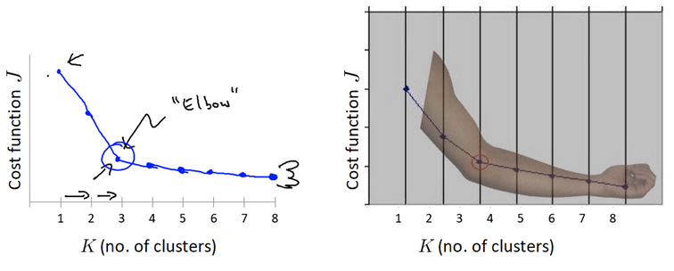

原文连接:https://www.cnblogs.com/Infi-chu/p/11496402.html
Infi-chu:
http://www.cnblogs.com/Infi-chu/
一、简介
1.聚类算法的应用领域
- 用户画像，广告推荐，Data Segmentation，搜索引擎的流量推荐，恶意流量识别
- 基于位置信息的商业推送，新闻聚类，筛选排序
- 图像分割，降维，识别；离群点检测；信用卡异常消费；发掘相同功能的基因片段
2.聚类算法
一种典型的无监督学习算法，主要用于将相似的样本自动归到一个类别中。
在聚类算法中根据样本之间的相似性，将样本规划到不同的类别中，对于不同的相似度计算方法，会得到不同的聚类结果。
3.聚类算法与分类算法的区别
聚类算法是无监督学习算法，
分类算法属于监督学习算法。
二、聚类算法api
1.api
sklearn.cluster.KMeans(n_clusters=8)
- 参数:
- n_clusters:开始的聚类中心数量
- 整型，缺省值=8，生成的聚类数，即产生的质心（centroids）数。
- n_clusters:开始的聚类中心数量
- 方法:
- estimator.fit(x)
- estimator.predict(x)
- estimator.fit_predict(x)
- 计算聚类中心并预测每个样本属于哪个类别,相当于先调用fit(x),然后再调用predict(x)
三、聚类算法实现流程
1.步骤
- 随机设置K个特征空间内的点作为初始的聚类中心
- 对于其他每个点计算到K个中心的距离，未知的点选择最近的一个聚类中心点作为标记类别
- 重新计算每个聚类的新中心（平均值）
- 如果计算得出的新中心与原点中心一样（质心不在移动），则结束，否则重新进行第二步的过程
2.总结
流程:
- 事先确定常数K，常数K意味着最终的聚类类别数;
- 首先随机选定初始点为质心，并通过计算每一个样本与质心之间的相似度(这里为欧式距离)，将样本点归到最相似的类中，
- 接着，重新计算每个类的质心(即为类中心)，重复这样的过程，直到质心不再改变，
- 最终就确定了每个样本所属的类别以及每个类的质心。
注意:
- 由于每次都要计算所有的样本与每一个质心之间的相似度，故在大规模的数据集上，K-Means算法的收敛速度比较慢。
四、模型评估
1.误差平方和（SSE\The sum of squares due to error）
eg.
如图中数据（-0.2,0.4,-0.8,1.3-0.7，均为真实值和预测值的差）
在K-means中的应用：
公式各部分内容：
【注】
上图中: k=2
- SSE图最终的结果,对图松散度的衡量.(eg: SSE(左图)<SSE(右图))
- SSE随着聚类迭代,其值会越来越小,直到最后趋于稳定
- 如果质心的初始值选择不好,SSE只会达到一个不怎么好的局部最优解.
2.“肘”方法（Elbow method）——K值确定

（1）对于n个点的数据集，迭代计算k from 1 to n，每次聚类完成后计算每个点到其所属的簇中心的距离的平方和；
（2）平方和是会逐渐变小的，直到k==n时平方和为0，因为每个点都是它所在的簇中心本身。
（3）在这个平方和变化过程中，会出现一个拐点也即“肘”点，下降率突然变缓时即认为是最佳的k值。
在决定什么时候停止训练时，肘形判据同样有效，数据通常有更多的噪音，在增加分类无法带来更多回报时，我们停止增加类别。
3.轮廓系数法（Silhouette Coefficient）
结合了聚类的凝聚度（Cohesion）和分离度（Separation），用于评估聚类的效果：
目的：
内部距离最小化，外部距离最大化
计算样本i到同簇其他样本的平均距离ai，ai 越小样本i的簇内不相似度越小，说明样本i越应该被聚类到该簇。
计算样本i到最近簇Cj 的所有样本的平均距离bij，称样本i与最近簇Cj 的不相似度，定义为样本i的簇间不相似度：bi =min{bi1, bi2, ..., bik}，bi越大，说明样本i越不属于其他簇。
求出所有样本的轮廓系数后再求平均值就得到了平均轮廓系数。
平均轮廓系数的取值范围为[-1,1]，系数越大，聚类效果越好。
簇内样本的距离越近，簇间样本距离越远
eg.
下图是500个样本含有2个feature的数据分布情况，我们对它进行SC系数效果衡量：
n_clusters = 2 The average silhouette_score is : 0.7049787496083262
n_clusters = 3 The average silhouette_score is : 0.5882004012129721
n_clusters = 4 The average silhouette_score is : 0.6505186632729437
n_clusters = 5 The average silhouette_score is : 0.56376469026194
n_clusters = 6 The average silhouette_score is : 0.4504666294372765
n_clusters 分别为 2，3，4，5，6时，SC系数如下，是介于[-1,1]之间的度量指标：
每次聚类后，每个样本都会得到一个轮廓系数，当它为1时，说明这个点与周围簇距离较远，结果非常好，当它为0，说明这个点可能处在两个簇的边界上，当值为负时，暗含该点可能被误分了。
从平均SC系数结果来看，K取3，5，6是不好的，那么2和4呢？
k=2的情况：
k=4的情况：
n_clusters = 2时，第0簇的宽度远宽于第1簇；
n_clusters = 4时，所聚的簇宽度相差不大，因此选择K=4，作为最终聚类个数。
4.CH系数（Calinski-Harabasz Index）
Calinski-Harabasz：
类别内部数据的协方差越小越好，类别之间的协方差越大越好（换句话说：类别内部数据的距离平方和越小越好，类别之间的距离平方和越大越好），
这样的Calinski-Harabasz分数s会高，分数s高则聚类效果越好。
tr为矩阵的迹, Bk为类别之间的协方差矩阵，Wk为类别内部数据的协方差矩阵;
m为训练集样本数，k为类别数。
使用矩阵的迹进行求解的理解：
矩阵的对角线可以表示一个物体的相似性
在机器学习里，主要为了获取数据的特征值，那么就是说，在任何一个矩阵计算出来之后，都可以简单化，只要获取矩阵的迹，就可以表示这一块数据的最重要的特征了，这样就可以把很多无关紧要的数据删除掉，达到简化数据，提高处理速度。
CH需要达到的目的：
用尽量少的类别聚类尽量多的样本，同时获得较好的聚类效果。
5.总结
1. 肘部法
下降率突然变缓时即认为是最佳的k值
2. SC系数
取值为[-1, 1]，其值越大越好
3. CH系数
分数s高则聚类效果越好
五、算法优化
1.k-means算法优点
1.原理简单（靠近中心点），实现容易
2.聚类效果中上（依赖K的选择）
3.空间复杂度o(N)，时间复杂度o(IKN)
【注】
N个样本点个数，K个中心点个数，I为迭代次数
2.k-means算法缺点
1.对离群点，噪声敏感 （中心点易偏移）
2.很难发现大小差别很大的簇及进行增量计算
3.结果不一定是全局最优，只能保证局部最优（与K的个数及初值选取有关）
3.Canopy算法配合初始聚类
（1）流程
（2）Canopy优缺点
优点：
1.Kmeans对噪声抗干扰较弱，通过Canopy对比，将较小的NumPoint的Cluster直接去掉有利于抗干扰。
2.Canopy选择出来的每个Canopy的centerPoint作为K会更精确。
3.只是针对每个Canopy的内做Kmeans聚类，减少相似计算的数量。
缺点：
1.算法中 T1、T2的确定问题 ，依旧可能落入局部最优解
4.K-means++
kmeans++目的，让选择的质心尽可能的分散
如下图中，如果第一个质心选择在圆心，那么最优可能选择到的下一个点在P(A)这个区域（根据颜色进行划分）

5.二分K-means
实现流程:
-
1.所有点作为一个簇
-
2.将该簇一分为二
-
3.选择能最大限度降低聚类代价函数（也就是误差平方和）的簇划分为两个簇。
-
4.以此进行下去，直到簇的数目等于用户给定的数目k为止。
隐含的一个原则
因为聚类的误差平方和能够衡量聚类性能，该值越小表示数据点越接近于他们的质心，聚类效果就越好。所以需要对误差平方和最大的簇进行再一次划分，因为误差平方和越大，表示该簇聚类效果越不好，越有可能是多个簇被当成了一个簇，所以我们首先需要对这个簇进行划分。
二分K均值算法可以加速K-means算法的执行速度，因为它的相似度计算少了并且不受初始化问题的影响，因为这里不存在随机点的选取，且每一步都保证了误差最小
6.K-medoids（k-中心聚类算法）
K-medoids和K-means是有区别的，不一样的地方在于中心点的选取
-
K-means中，将中心点取为当前cluster中所有数据点的平均值，对异常点很敏感!
-
K-medoids中，将从当前cluster 中选取到其他所有（当前cluster中的）点的距离之和最小的点作为中心点。
算法流程：
( 1 )总体n个样本点中任意选取k个点作为medoids
( 2 )按照与medoids最近的原则，将剩余的n-k个点分配到当前最佳的medoids代表的类中
( 3 )对于第i个类中除对应medoids点外的所有其他点，按顺序计算当其为新的medoids时，代价函数的值，遍历所有可能，选取代价函数最小时对应的点作为新的medoids
( 4 )重复2-3的过程，直到所有的medoids点不再发生变化或已达到设定的最大迭代次数
( 5 )产出最终确定的k个类
k-medoids对噪声鲁棒性好。
例：当一个cluster样本点只有少数几个，如（1,1）（1,2）（2,1）（1000,1000）。其中（1000,1000）是噪声。如果按照k-means质心大致会处在（1,1）（1000,1000）中间，这显然不是我们想要的。这时k-medoids就可以避免这种情况，他会在（1,1）（1,2）（2,1）（1000,1000）中选出一个样本点使cluster的绝对误差最小，计算可知一定会在前三个点中选取。
k-medoids只能对小样本起作用，样本大，速度就太慢了，当样本多的时候，少数几个噪音对k-means的质心影响也没有想象中的那么重，所以k-means的应用明显比k-medoids多。
7.Kernel K-means
kernel k-means实际上，就是将每个样本进行一个投射到高维空间的处理，然后再将处理后的数据使用普通的k-means算法思想进行聚类。
8.ISODATA
类别数目随着聚类过程而变化；
对类别数会进行合并，分裂，
“合并”：（当聚类结果某一类中样本数太少，或两个类间的距离太近时）
“分裂”（当聚类结果中某一类的类内方差太大，将该类进行分裂）
9.Mini Batch K-means
适合大数据的聚类算法
大数据量是什么量级？通常当样本量大于1万做聚类时，就需要考虑选用Mini Batch K-Means算法。
Mini Batch KMeans使用了Mini Batch（分批处理）的方法对数据点之间的距离进行计算。
Mini Batch计算过程中不必使用所有的数据样本，而是从不同类别的样本中抽取一部分样本来代表各自类型进行计算。由于计算样本量少，所以会相应的减少运行时间，但另一方面抽样也必然会带来准确度的下降。
该算法的迭代步骤有两步：
(1)从数据集中随机抽取一些数据形成小批量，把他们分配给最近的质心
(2)更新质心
与Kmeans相比，数据的更新在每一个小的样本集上。对于每一个小批量，通过计算平均值得到更新质心，并把小批量里的数据分配给该质心，随着迭代次数的增加，这些质心的变化是逐渐减小的，直到质心稳定或者达到指定的迭代次数，停止计算。
10.总结
| 优化方法 | 思路 |
|---|---|
| Canopy+kmeans | Canopy粗聚类配合kmeans |
| kmeans++ | 距离越远越容易成为新的质心 |
| 二分k-means | 拆除SSE最大的簇 |
| k-medoids | 和kmeans选取中心点的方式不同 |
| kernel kmeans | 映射到高维空间 |
| ISODATA | 动态聚类 |
| Mini-batch K-Means | 大数据集分批聚类 |
六、特征工程——特征降维
1.降维
降维是指在某些限定条件下，降低随机变量(特征)个数，得到一组“不相关”主变量的过程
- 降低随机变量的个数
- 相关特征(correlated feature)
- 相对湿度与降雨量之间的相关
2.降维的两种方式
- 特征选择
- 主成分分析（可以理解一种特征提取的方式）
3.特征选择
数据中包含冗余或无关变量（或称特征、属性、指标等），旨在从原有特征中找出主要特征。
4.特征选择方法
- Filter(过滤式)：主要探究特征本身特点、特征与特征和目标值之间关联
- 方差选择法：低方差特征过滤
- 相关系数
- Embedded (嵌入式)：算法自动选择特征（特征与目标值之间的关联）
- 决策树:信息熵、信息增益
- 正则化：L1、L2
- 深度学习：卷积等
5.低方差特征过滤
删除低方差的一些特征，前面讲过方差的意义。再结合方差的大小来考虑这个方式的角度。
- 特征方差小：某个特征大多样本的值比较相近
- 特征方差大：某个特征很多样本的值都有差别
API：
sklearn.feature_selection.VarianceThreshold(threshold = 0.0)
- 删除所有低方差特征
- Variance.fit_transform(X)
- X:numpy array格式的数据[n_samples,n_features]
- 返回值：训练集差异低于threshold的特征将被删除。默认值是保留所有非零方差特征，即删除所有样本中具有相同值的特征。
eg.
# 有如下特征
pe_ratio,pb_ratio,market_cap,return_on_asset_net_profit,du_return_on_equity,ev,earnings_per_share,revenue,total_expense
index,pe_ratio,pb_ratio,market_cap,return_on_asset_net_profit,du_return_on_equity,ev,earnings_per_share,revenue,total_expense,date,return
0,000001.XSHE,5.9572,1.1818,85252550922.0,0.8008,14.9403,1211444855670.0,2.01,20701401000.0,10882540000.0,2012-01-31,0.027657228229937388
1,000002.XSHE,7.0289,1.588,84113358168.0,1.6463,7.8656,300252061695.0,0.326,29308369223.2,23783476901.2,2012-01-31,0.08235182370820669
2,000008.XSHE,-262.7461,7.0003,517045520.0,-0.5678,-0.5943,770517752.56,-0.006,11679829.03,12030080.04,2012-01-31,0.09978900335112327
3,000060.XSHE,16.476,3.7146,19680455995.0,5.6036,14.617,28009159184.6,0.35,9189386877.65,7935542726.05,2012-01-31,0.12159482758620697
4,000069.XSHE,12.5878,2.5616,41727214853.0,2.8729,10.9097,81247380359.0,0.271,8951453490.28,7091397989.13,2012-01-31,-0.0026808154146886697
分析：
- 初始化VarianceThreshold,指定阀值方差
- 调用fit_transform
def variance_demo():
"""
删除低方差特征——特征选择
:return: None
"""
data = pd.read_csv("factor_returns.csv")
print(data)
# 1、实例化一个转换器类
transfer = VarianceThreshold(threshold=1)
# 2、调用fit_transform
data = transfer.fit_transform(data.iloc[:, 1:10])
print("删除低方差特征的结果：\n", data)
print("形状：\n", data.shape)
return None
# 返回结果
index pe_ratio pb_ratio market_cap \
0 000001.XSHE 5.9572 1.1818 8.525255e+10
1 000002.XSHE 7.0289 1.5880 8.411336e+10
... ... ... ... ...
2316 601958.XSHG 52.5408 2.4646 3.287910e+10
2317 601989.XSHG 14.2203 1.4103 5.911086e+10
return_on_asset_net_profit du_return_on_equity ev \
0 0.8008 14.9403 1.211445e+12
1 1.6463 7.8656 3.002521e+11
... ... ... ...
2316 2.7444 2.9202 3.883803e+10
2317 2.0383 8.6179 2.020661e+11
earnings_per_share revenue total_expense date return
0 2.0100 2.070140e+10 1.088254e+10 2012-01-31 0.027657
1 0.3260 2.930837e+10 2.378348e+10 2012-01-31 0.082352
2 -0.0060 1.167983e+07 1.203008e+07 2012-01-31 0.099789
... ... ... ... ... ...
2315 0.2200 1.789082e+10 1.749295e+10 2012-11-30 0.137134
2316 0.1210 6.465392e+09 6.009007e+09 2012-11-30 0.149167
2317 0.2470 4.509872e+10 4.132842e+10 2012-11-30 0.183629
[2318 rows x 12 columns]
删除低方差特征的结果：
[[ 5.95720000e+00 1.18180000e+00 8.52525509e+10 ..., 1.21144486e+12
2.07014010e+10 1.08825400e+10]
[ 7.02890000e+00 1.58800000e+00 8.41133582e+10 ..., 3.00252062e+11
2.93083692e+10 2.37834769e+10]
[ -2.62746100e+02 7.00030000e+00 5.17045520e+08 ..., 7.70517753e+08
1.16798290e+07 1.20300800e+07]
...,
[ 3.95523000e+01 4.00520000e+00 1.70243430e+10 ..., 2.42081699e+10
1.78908166e+10 1.74929478e+10]
[ 5.25408000e+01 2.46460000e+00 3.28790988e+10 ..., 3.88380258e+10
6.46539204e+09 6.00900728e+09]
[ 1.42203000e+01 1.41030000e+00 5.91108572e+10 ..., 2.02066110e+11
4.50987171e+10 4.13284212e+10]]
形状：
(2318, 8)
6.相关系数
主要实现方式：
- 皮尔逊相关系数
- 斯皮尔曼相关系数
7.皮尔逊相关系数（Pearson Correlation Coefficient）
作用：
反应变量之间相关关系密切程度的统计指标
公式：
特点：
相关系数的值介于–1与+1之间，即–1≤ r ≤+1。其性质如下：
- 当r>0时，表示两变量正相关，r<0时，两变量为负相关
- 当|r|=1时，表示两变量为完全相关，当r=0时，表示两变量间无相关关系
- 当0<|r|<1时，表示两变量存在一定程度的相关。且|r|越接近1，两变量间线性关系越密切；|r|越接近于0，表示两变量的线性相关越弱
- 一般可按三级划分：|r|<0.4为低度相关；0.4≤|r|<0.7为显著性相关；0.7≤|r|<1为高度线性相关
API：
from scipy.stats import pearsonr
- x : (N,) array_like
- y : (N,) array_like Returns: (Pearson’s correlation coefficient, p-value)
8.斯皮尔曼相关系数（Rank IC）
作用：
反应变量之间相关关系密切程度的统计指标
公式：
特点：
- 斯皮尔曼相关系数表明 X (自变量) 和 Y (因变量)的相关方向。 如果当X增加时， Y 趋向于增加, 斯皮尔曼相关系数则为正
- 与之前的皮尔逊相关系数大小性质一样，取值 [-1, 1]之间
【注】
斯皮尔曼相关系数比皮尔逊相关系数应用更加广泛
API：
from scipy.stats import spearmanr
eg.
from scipy.stats import spearmanr
x1 = [12.5, 15.3, 23.2, 26.4, 33.5, 34.4, 39.4, 45.2, 55.4, 60.9]
x2 = [21.2, 23.9, 32.9, 34.1, 42.5, 43.2, 49.0, 52.8, 59.4, 63.5]
spearmanr(x1, x2)
# 结果
SpearmanrResult(correlation=0.9999999999999999, pvalue=6.646897422032013e-64)
9.主成分分析
- 定义：高维数据转化为低维数据的过程，在此过程中可能会舍弃原有数据、创造新的变量
- 作用：是数据维数压缩，尽可能降低原数据的维数（复杂度），损失少量信息。
- 应用：回归分析或者聚类分析当中
API：
sklearn.decomposition.PCA(n_components=None)
- 将数据分解为较低维数空间
- n_components:
- 小数：表示保留百分之多少的信息
- 整数：减少到多少特征
- PCA.fit_transform(X) X:numpy array格式的数据[n_samples,n_features]
- 返回值：转换后指定维度的array
eg.
[[2,8,4,5],
[6,3,0,8],
[5,4,9,1]]
from sklearn.decomposition import PCA
def pca_demo():
"""
对数据进行PCA降维
:return: None
"""
data = [[2,8,4,5], [6,3,0,8], [5,4,9,1]]
# 1、实例化PCA, 小数——保留多少信息
transfer = PCA(n_components=0.9)
# 2、调用fit_transform
data1 = transfer.fit_transform(data)
print("保留90%的信息，降维结果为：\n", data1)
# 1、实例化PCA, 整数——指定降维到的维数
transfer2 = PCA(n_components=3)
# 2、调用fit_transform
data2 = transfer2.fit_transform(data)
print("降维到3维的结果：\n", data2)
return None
# 结果
保留90%的信息，降维结果为：
[[ -3.13587302e-16 3.82970843e+00]
[ -5.74456265e+00 -1.91485422e+00]
[ 5.74456265e+00 -1.91485422e+00]]
降维到3维的结果：
[[ -3.13587302e-16 3.82970843e+00 4.59544715e-16]
[ -5.74456265e+00 -1.91485422e+00 4.59544715e-16]
[ 5.74456265e+00 -1.91485422e+00 4.59544715e-16]]